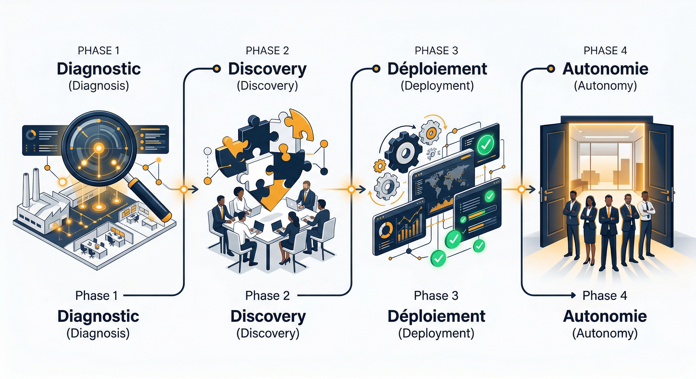
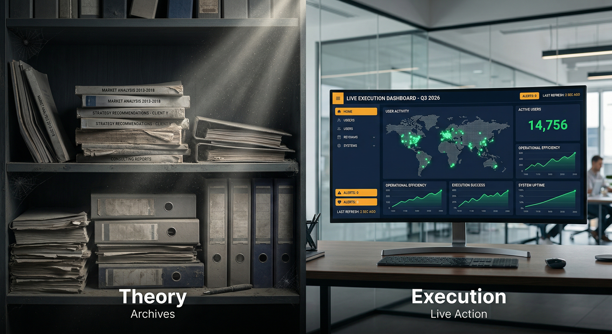

Pas de PowerPoint.
Du terrain.
Notre méthode en 4 phases. De la première rencontre à l'autonomie de vos équipes. Chaque étape a un livrable concret et un critère de passage.
4 phases. 4 livrables. 0 surprise.

Diagnostic express
"On vient chez vous. On observe. On mesure."
Rencontre terrain avec vos équipes. Cartographie de vos process existants. Identification des gains rapides et des transformations profondes.
Gate : GO/NO-GO mutuel. Si le fit n'est pas là, on vous le dit.
Discovery & Cadrage
"On comprend votre métier avant de toucher à quoi que ce soit."
Interviews métier approfondies. Analyse des données et des flux existants. Priorisation des chantiers par impact et faisabilité.
Gate : Accord signé sur le périmètre et les objectifs.
Déploiement
"On installe. On forme. On ajuste. En temps réel."
Configuration des outils IA dans vos process. Formation continue des équipes. Ajustements en temps réel basés sur les retours terrain.
Gate : KPIs atteints ou plan d'ajustement validé.
Ancrage & Autonomie
"On ne crée pas de dépendance. On construit votre autonomie."
Suivi des KPIs et optimisation continue. Vos équipes sont autonomes sur les outils. Identification de nouvelles opportunités.
Gate : Vos équipes n'ont plus besoin de nous. C'est notre mesure du succès.
Pourquoi ça marche mieux qu'un cabinet traditionnel

| Cabinet traditionnel | AI Manifest | |
|---|---|---|
| Ce qu'ils livrent | Un rapport de recommandations | Des outils déployés dans vos équipes |
| Durée | 6-12 mois d'audit | Premiers résultats en 4 semaines |
| Coût | 150-500K€ | Adapté à votre contexte |
| Qui fait le travail | Des juniors supervisés par un partner | Un expert senior de votre métier |
| Après la mission | Vous êtes seul avec le rapport | Support continu, outils maintenus |
Ce en quoi on croit
Terrain d'abord
On ne théorise pas. On déploie. Chaque décision est prise au contact de la réalité de vos équipes.
L'expertise métier avant la tech
L'IA est un outil. La transformation, c'est une affaire d'humains qui comprennent le métier.
Résultats mesurables
Chaque mission a des KPIs clairs, définis ensemble, suivis en temps réel. Pas de "on verra dans 6 mois".
L'autonomie comme objectif
On réussit quand vous n'avez plus besoin de nous. Le contraire du modèle cabinet qui crée la dépendance.
Prêt à commencer ?
Évaluez votre potentiel de transformation ou rejoignez le collectif d'experts.